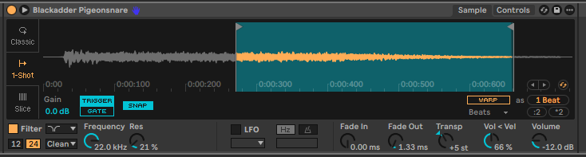
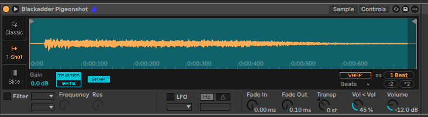
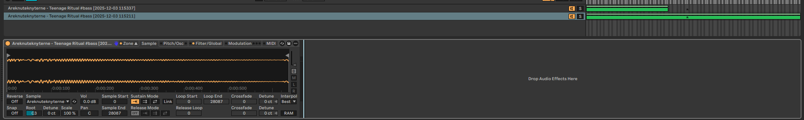
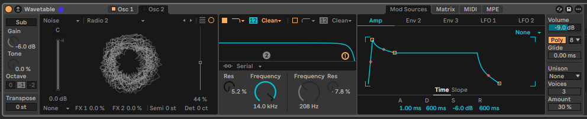
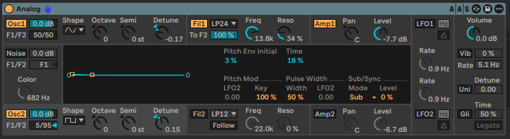
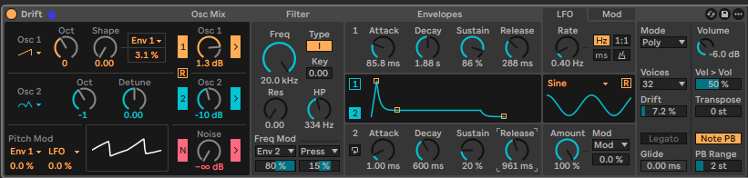
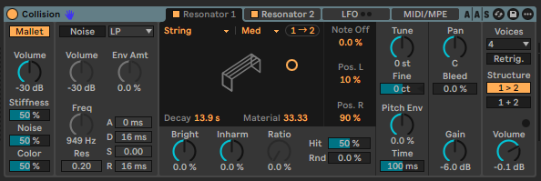
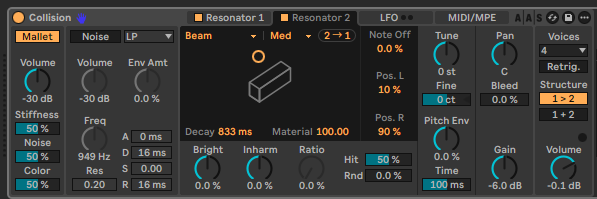
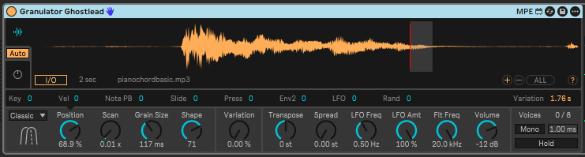

Demo Track:
Yecch Drums and the Blackadder's Pistol
Sources:
Åreknuteknyterne - You Could Be War (toms, kick, cymbals)
Blackadder Goes Forth (snare, gunshot)
To create this rack I simply took the intro fill from You Could Be War and manually sliced it into the different drums using Simpler. I then exported to a new drum rack. For the snare drum I took a clip from an episode of Blackadder Goes Forth, in which Blackadder shoots a pigeon; I cropped it to only include the gunshot and then transposed the result upwards and further cropped it to make the noise more abrupt, so that it sounds more like striking a drum than firing a reverberating shot. Finally I increased the gain for a more powerful tone. For extra depth I also opted to include the gunshot in full, at its original pitch, as a separate sound.
 Drums sample:
Pistol sample:
Preview:
Wav Piano
Sources:
Own sample from a public train station piano.
For this sound I recorded a single piano keypress using my phone, in .wav format. I imported this sound file first into Audacity in order to crop it down and apply a slight reverb, before I imported that into Ableton and placed it in Simpler to use as a sampler instrument. The result is a fairly convincing piano sound, however to improve it I would take more samples and place all of them in Sampler to add an element of random variation. The sound cuts off quite abruptly which is not ideal, but unnoticeable most of the time.
Sample:
Preview:
Ritual Bass
Sources:
Åreknuteknyterne - Teenage Ritual
This bass was also easy to clip as, just like the drums, it plays in isolation at the beginning of its piece. I sliced the sample into individual notes and chose two of these, of the same pitch, to place into Sampler. I configured Sampler such that C#2 and above play only one sample, whilst C2 and below play both for added depth and a more powerful sound. Using a filter I added some drive to the samples.
Sample:
Preview:
Wav Bass, of no relation to the Wav Piano
Type: Wavetable
Synth: Wavetable
Role: Bass


Dordogne
Type: Subtractive
Synth: Analog
Role: Lead/chorus

Drift Asawdion
Type: Subtractive
Synth: Drift
Role: Lead/chorus/harmony

Keighley
Type: Vector
Synth: Collision
Role: Harmony
To create this synth I set resonator 1 to strings and resonator 2 to "beam". This makes a steel drum like sound that reverberates for a long time; coupled with a long decay, this produces a pleasant melodic ringing.
 
Ghostlead
Type: Granulative
Synth: Granulator 3
Role: Lead
In order to produce this sound, I set a small grain size which loops rapidly at higher pitches and slower at lower pitches, because I left warp off. This makes it rather unsuitable for playing chords but allows a greater range of different sounds to be produced with the instrument. A high shape value means the sound transitions smoothly between pitches and a low scan value makes the sound more consistent.

Sample:
Screechlead
Type: Granulative
Synth: Gruanulator 3
Role: Lead
Sample:
Spectre Piano
Type: Granulative
Synth: Granulator 3
Role: Harmony
Sample: